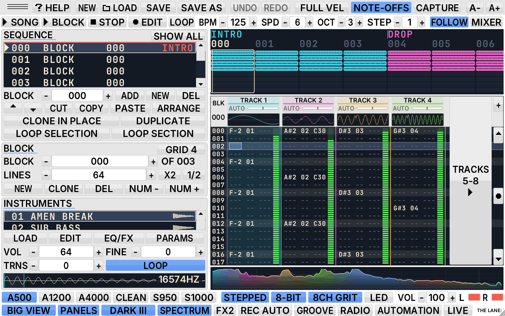
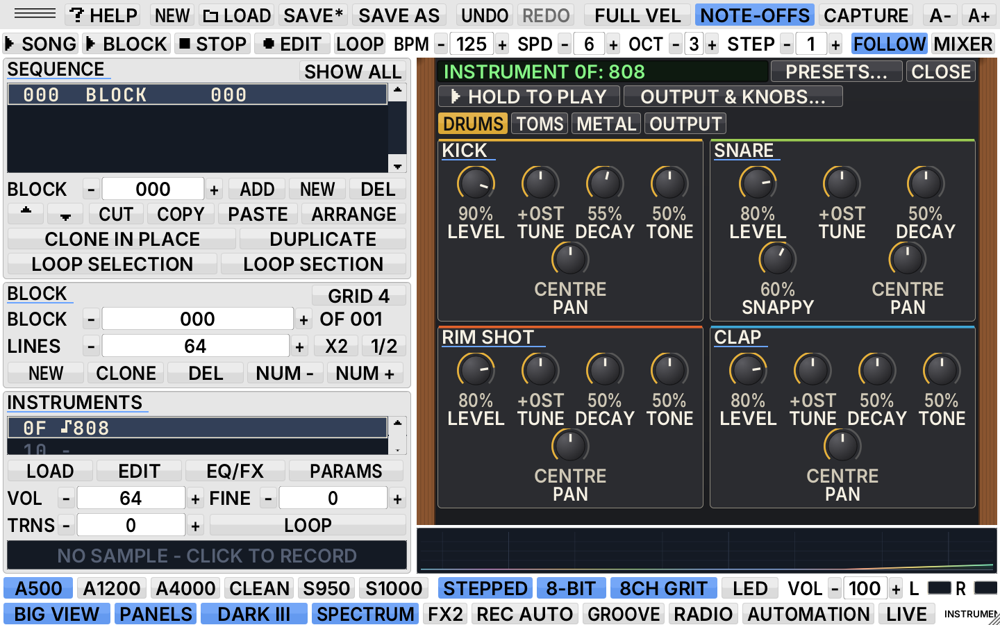
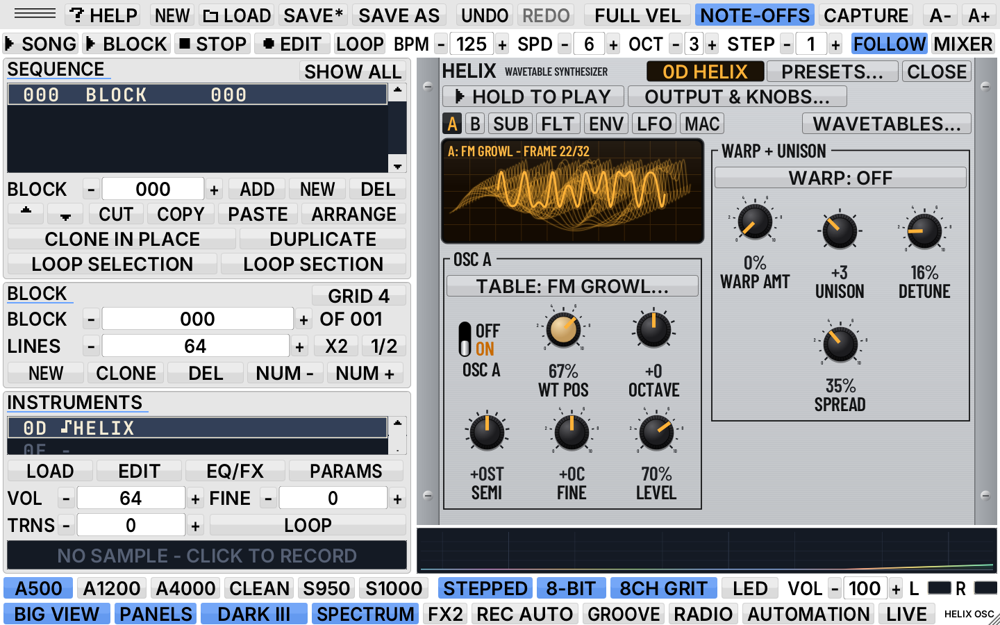
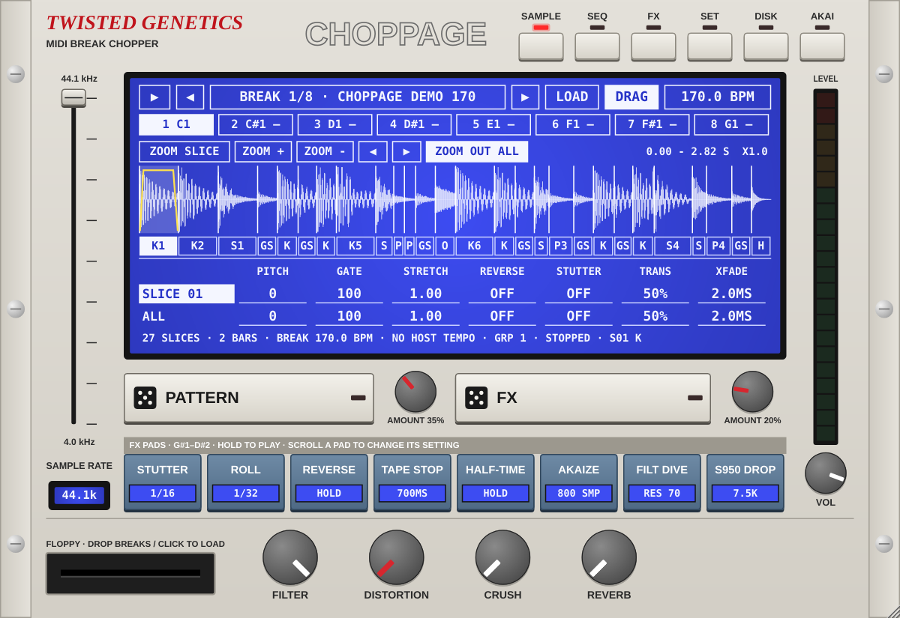

What's new or changed since the manual was last brought up to date (v1.01.0-build.285, 27 November 2026). Newest first.
Each entry names the manual section it belongs to. When the manual is next brought up to date, these entries move into it and leave this page.
A front page for the manual (mock-ups)
v1.01.0 · 27 November 2026
Manual: the front page (new), before the contents
Three ideas for the manual's cover, at A4. Pick one (or mix them) and it goes on the front of the manual and its PDF when the manual is next brought up to date.
USER MANUAL · V1.01
PAULA'S REVENGE
The tracker, sampler and synth studio, in the spirit of the Amiga.

TWISTED GENETICSMAC · WINDOWS
A · WORKBENCH — paper white, the four track colours along the top, the main screen big.
PAULA'S REVENGE
USER MANUAL · V1.01
TRACKER

DRUMS

SYNTHS

BREAKS
TWISTED GENETICSDISK 1 OF 1
B · DISK LABEL — a pixel-type title like an old disk label, four screens: tracker, drums, synths, breaks.
Breaks, basslines and four tracks at a time — with all of today's studio behind them.
TWISTED GENETICSMAC · WINDOWS
C · PATTERN SHEET — a huge title over a pattern printed faintly behind, one screen breaking off the edge.
CHOPPAGE 0.16.1: AKAIZE IN TIME works live
v1.01.0 · 27 November 2026
Manual: Instruments → CHOPPAGE
On CHOPPAGE's AKAI tab, MODE (the first row: drag or scroll the box from STRETCH to IN TIME) now changes the live sound. Before, IN TIME at IN TIME PITCH 0 sounded like the dry break.
IN TIME gives the metallic Akai sound while the beat stays in time: the grains go through the break as the stretch would, each group repeating a little of it, then jump on to where the beat is.
How strong it is: PAD STRETCH (AKAI tab, LIVE) for the AKAIZE pad, and each slice's STRETCH for slices. At x1 there's no change.
IN TIME PITCH still moves the grains' pitch without changing the timing.
The render (AKAIZE THE BREAK) in IN TIME keeps the break's length; its sound comes from the render's own PITCH.